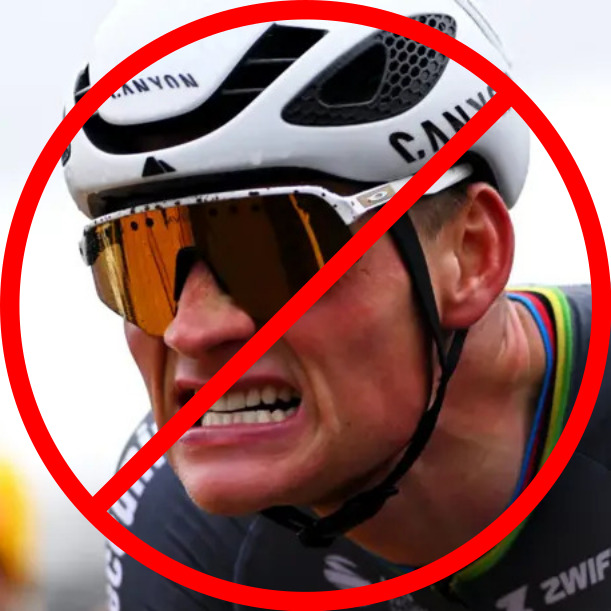
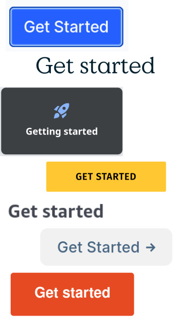
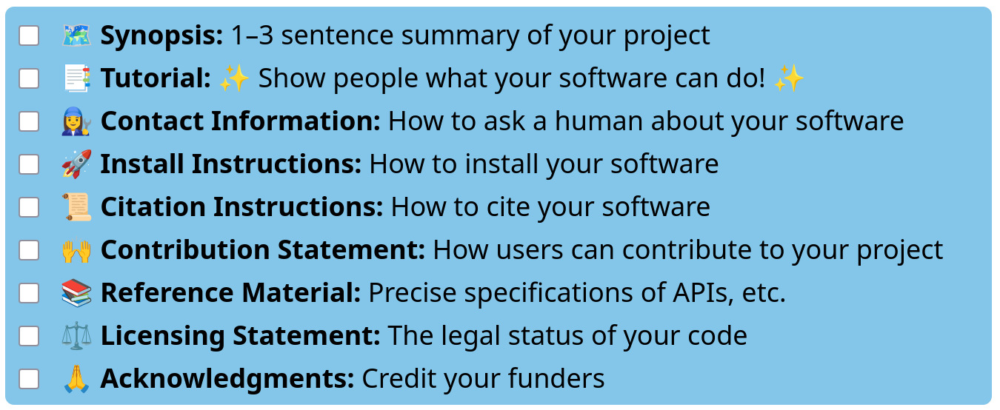
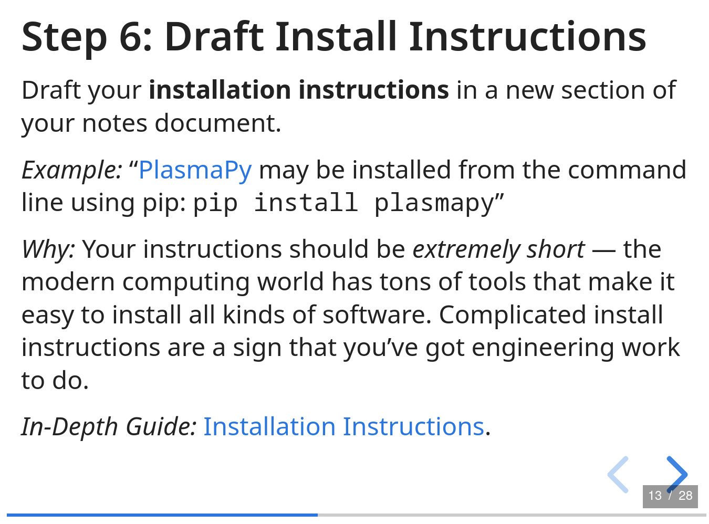
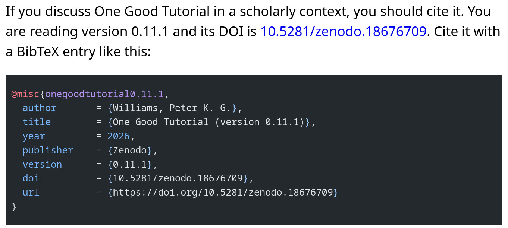

One Good Tutorial:
Defining a “Minimum Viable Documentation Product” for Scientific Software
Best Practice: recognize that docs are hard.
It’s really, really difficult to create great documentation.
- Docs are education.
- And design.
- And engineering.
- And the problem space is unbounded.
Separately, documentation efforts rarely get the resources they deserve.
This combination tends to be demoralizing!
Best Practice: don’t try to build Rome in a day.

Not this MVDP. Getty Images.
Target a minimum viable documentation product (MVDP).
“a version of a product with just enough features to be usable by early customers who can then provide feedback for future product development”
Why?
- Realism: resources for writing docs are usually minimal.
- Optimism: the MVDP is the first step of, hopefully, many.
Social permission to be just good enough.
Can we define a generic MVDP for scientific software?

My claim is: yes.
Taking inspiration from the broader ecosystem, the single most important thing to provide is: one good tutorial that’s online.
- The key doc for new or potential users
- Drive “conversions”
- Build trust
- High importance in MVDP scenario: new projects
You need more than this … but not much more.
Best Practice: follow a checklist.
I’ve developed one that defines an MVDP for scientific software.

find it at: onegoodtutorial.org
If you’re not sure how to get started, use the playbook.

- Delivered as an HTML slideshow
- Suggests a separate notes doc
- Suggests developing a few user personas
- Suggests storyboarding tutorial before sitting down to write
- Lots of links to in-depth guides
Best Practice: celebrate your wins.
If your docs satisfy the checklist (no matter how you got there), show off with a badge:
Instructions at onegoodtutorial.org/badge/
If you’ve seen enough … thanks!
This work was supported by the Better Scientific Software Fellowship Program, a collaborative effort of the U.S. Department of Energy (DOE), Office of Advanced Scientific Computing Research via ANL under Contract DE-AC02-06CH11357 and the National Nuclear Security Administration Advanced Simulation and Computing Program via LLNL under Contract DE-AC52-07NA27344; and by the National Science Foundation (NSF) via SHI under Grant No. 2435328.
Feedback for the BSSw team:
onegoodtutorial.org ✦ github.com/pkgw/onegoodtutorial
Peter K. G. Williams • Center for Astrophysics | Harvard & Smithsonian
newton.cx/~peter/ •
pwilliams@cfa.harvard.edu
If not … let’s dig into the playbook.
And then I’ll say a little about the design and implementation of One Good Tutorial itself.
Part 0: Preliminaries
A few points to address before we really get started.
Intended Audience
This playbook is aimed at authors of software projects that are:
- Small / informally-managed
- Open source
- Scientific
We’d like to think that it will still have much to offer to participants in projects that do not meet these descriptions. But to keep focused we’ve avoided even mentioning some of the issues that arise in other circumstances.
Terminology
We assume that your documentation will be eventually published as HTML on the web, so we’ll refer to documentation pages and your overall documentation site. Reinterpret accordingly if you’re targeting a different medium.
(Arguably, writing docs in the 21st century requires you to become a bit of a web developer. Fortunately, hosting services like ReadTheDocs.org can take care of a lot of the hard parts for you.)
The Prime Directive
Above all else: this playbook is a recommendation, nothing more. Take inspiration from the parts that you like, ignore the ones that you don’t, and always trust your intuition. There’s no one “right” way to write docs, any more than there’s one right way to do anything else creative.
Part 1: Planning
“Plans are worthless, but planning is everything.” — Dwight Eisenhower*
Step 1: Start A Notes Doc
It’ll be helpful to have some place to write down notes as you work on your docs — no need for these to be public. A Google Doc is fine. So is paper!
Step 2: Draft Your Synopsis
The synopsis is 1–3 sentences summarizing your software. Jot down a first draft in your notes.
Example: “FiPy is an object oriented, partial differential equation (PDE) solver, written in Python, based on a standard finite volume (FV) approach."
Why: Your final synopsis will end up everywhere: at the top of your README or website, in announcements, maybe even grant proposals. Best to get a rough draft ASAP.
In-Depth Guide: Writing a Project Synopsis.
Step 3: Think Up Some Personas
A persona is an imaginary, but specific, person who might use your software and documenation. Spend just a few minutes making up 2–3 named personas, and jot down brief profiles in a new section of your notes.
Example: “Postdoc Pete saw me give a talk about my software that computes model exoplanet spectra. He has observational data and is curious to see if my model matches, but won’t bother if it’s too hard to run.”
Why: The design of your documentation (and your whole project) will be stronger if it targets specific kinds of people, not just a vague, generic “user”.
In-Depth Guide: Personas.
Step 4: Outline Your Tutorial
Plan out a tutorial experience that will show new users how to accomplish something cool using your software. Record notes as an outline or storyboard.
Why: Your tutorial is your software’s make-or-break moment, so it should be as good as it can be. Planning it early helps you foresee any weak points.
Example: “Hmm, Undergrad Ursula is going to need to download a three-gigabyte data file for my tutorial. I need to figure out where to host it and tell her to kick off the download to run while she’s installing the code.”
In-Depth Guide: Planning a Tutorial.
Part 2: “Easy” Drafts
Next, we’ll focus on drafting some of the “easy stuff“. These are bits of documentation that your software really ought to have, but tend to be short and self-contained. When things go well, some of these might take only a few minutes to write.
Step 5: Draft Contact Information
Draft your project’s contact information in a new section of your notes document.
Example: “For questions, bug reports, or feedback, email the author at …”
Why: There are lots of reasons that people will want to reach out to you about your project. Tell them how!
In-Depth Guide: Contact Information.
Step 6: Draft Install Instructions
Draft your installation instructions in a new section of your notes document.
Example: “PlasmaPy may be installed from the
command line using pip: pip install plasmapy”
Why: Your instructions should be extremely short — the modern computing world has tons of tools that make it easy to install all kinds of software. Complicated install instructions are a sign that you’ve got engineering work to do.
In-Depth Guide: Installation Instructions.
Step 7: Draft Citation Instructions
Draft your citation instructions in a new section of your notes document.
Example: “Libcint: An efficient general integral library for Gaussian basis functions, Q. Sun, J. Comp. Chem. 36, 1664 (2015)”
Why: Unfortunately, many users of scientific software need to be reminded to cite it appropriately. Software citation practices also vary widely between fields, so even those who know to cite your software will need to be told how to do so. Everybody wins if you provide easy, prominent, and firm guidance.
In-Depth Guide: Software Citation.
Step 8: Draft Licensing Statement
Draft a licensing statement in a new section of your notes document.
Example: “This project is licensed under the MIT License.”
Why: Formally, people aren’t even allowed to download your software if you don’t provide certain basic information about its legal status. Don’t panic, though — in most cases, you just need to provide a few boilerplate sentences. But you should understand what they mean.
In-Depth Guide: Licensing Statements.
Step 9: Draft Acknowledgments
Draft acknowledgments in a new section of your notes.
You’re encouraged, but not obligated, to mention One Good Tutorial in your acknowledgments.
Example: “The MolSSI is supported by the U.S. National Science Foundation through grant number CHE-2136142.”
Why: If a funder supported work on a software project, they almost surely should be acknowledged somewhere in your documentation. Take a few minutes to make sure that all funding sources are listed properly.
In-Depth Guide: Acknowledgments.
Step 10: Draft Contribution Statement
Draft a contribution statement in a new section of your notes document.
Example: “The Astropy project is made both by and for its users, so we accept contributions of many kinds …”
Why: You should help other people understand if and how they can contribute to your software. New projects may not need more than an encouraging sentence or two. Popular projects might offer a more substantial Contribution Guide.
In-Depth Guide: Contribution Statements.
Part 3: First Build
It’s time to start turning your documentation from plans into reality — which means committing to some specifics.
Step 11: Scope Out Remaining Material
Make a list of other pages required for your “minimum viable” documentation. The checklist calls for only one more element: reference material, such as API docs.
Why: One size does not fit all — now is the time to nail down what “good enough documentation” means to your project.
Example: “Beyond API docs, Developer Danielle is going to want to understand the schema of the JSON file that my tool emits.”
In-Depth Guide: Other Common Documentation Elements.
Step 12: Figure Out Authoring Tools
Select the tool(s) you’ll use to author your project’s documentation; integrate them into your project’s codebase. This may be quick if you’ve done this before, time-consuming if not.
Example: your entire documentation might fit comfortably in a single README.md file.
Example: Sphinx.
In-Depth Guide: Authoring Tools.
Step 13: Stub Your Documents
Copy your “easy” draft texts into their intended places in your repository, and make minimal placeholders for the remaining documents that you’ve planned (“Tutorial goes here”).
Look over the skeleton of your site.
Why: Now is a good time to experiment with the organization and style of your site. Is anything essential missing?
Step 14: Figure Out Publishing Tools
Select the tool(s) you’ll use to publish your project’s documentation; integrate them into your project’s codebase. Once again, this may be a time-consuming step if you haven’t set up this kind of workflow before.
Validate the workflow by publishing your skeleton docs.
Example: Continuous deployment to readthedocs.org.
In-Depth Guide: Publishing Tools.
Part 4: Full Steam Ahead
The foundations are in place, but you still need to draft some of your most important docs. Let’s tackle them.
Step 15: Draft The Tutorial
Write a first draft of your tutorial.
Why: Drafting the “easy” docs first has gotten you used to your tools and site layout. It’s time to take on a more open-ended writing project.
In-Depth Guide: Writing a Tutorial.
Step 16: Draft The Rest
Write up your API reference materials and any other documents that are still placeholders.
Why: Hopefully, the experience of writing the tutorial has helped you get a better understanding of which support materials are the most important, and what your examples should look like.
In-Depth Guide: Writing Reference Material.
Step 17: Review and Revise
Take some time to review what you’ve written and revise anything that’s unclear or inaccurate. Hard-to-read docs often indicate an underlying engineering problem to address.
Why: “When you write a book, you spend day after day scanning and identifying the trees. When you’re done, you have to step back and look at the forest.” ― Stephen King*
Step 18: Publish and Celebrate
That’s it! You’ve successfully written a set of documentation that will do credit to you and your project. Consider adding a One Good Tutorial badge to your README to proclaim this milestone.
Publish your docs and find a way to reward yourself for a job well done.
Why: Working on docs can feel like a slog — they’re never “finished,” and you’re probably all too aware of the shortcomings of whatever you’ve just written. This playbook has been designed to lead up to this tangible moment of victory, so go ahead and enjoy it!
Step 19 (Optional): Feedback
One Good Tutorial was developed by Peter K. G. Williams with the support of a Better Scientific Software (BSSw) Fellowship.
The BSSw team would like to collect feedback about the user impact of this resource, so please consider taking this three-minute survey about your experience.
You can also reach out by creating an issue or pull request on the One Good Tutorial GitHub repository, or by contacting the author directly.
One Good Tutorial owes much to the Diátaxis framework.
“A way of thinking about and doing documentation” — diataxis.fr
Namely: there are different kinds of documentation stemming from different user needs.

In its own terminology, Diátaxis is mostly explanation. One Good Tutorial is mostly how-to guide.
Behind the scenes, One Good Tutorial is pretty boring.
Basic static website, built with Zola, served via GitHub Pages:
https://github.com/pkgw/onegoodtutorial/
One unusual element is release automation using Cranko:

GoatCounter for analytics, OpenGraph tags for social previews.
Thanks (again) for your attention!
This work was supported by the Better Scientific Software Fellowship Program, a collaborative effort of the U.S. Department of Energy (DOE), Office of Advanced Scientific Computing Research via ANL under Contract DE-AC02-06CH11357 and the National Nuclear Security Administration Advanced Simulation and Computing Program via LLNL under Contract DE-AC52-07NA27344; and by the National Science Foundation (NSF) via SHI under Grant No. 2435328.
Feedback for the BSSw team:
onegoodtutorial.org ✦ github.com/pkgw/onegoodtutorial
Peter K. G. Williams • Center for Astrophysics | Harvard & Smithsonian
newton.cx/~peter/ •
pwilliams@cfa.harvard.edu
HTML talk info: https://tinyurl.com/htmltalk • Design credits: Hakim El Hattab (“white” theme), Julieta Ulanovsky (Montserrat font), Christian Robertson (Roboto fonts) • Tech credits: reveal.js, git, Firefox developer tools.